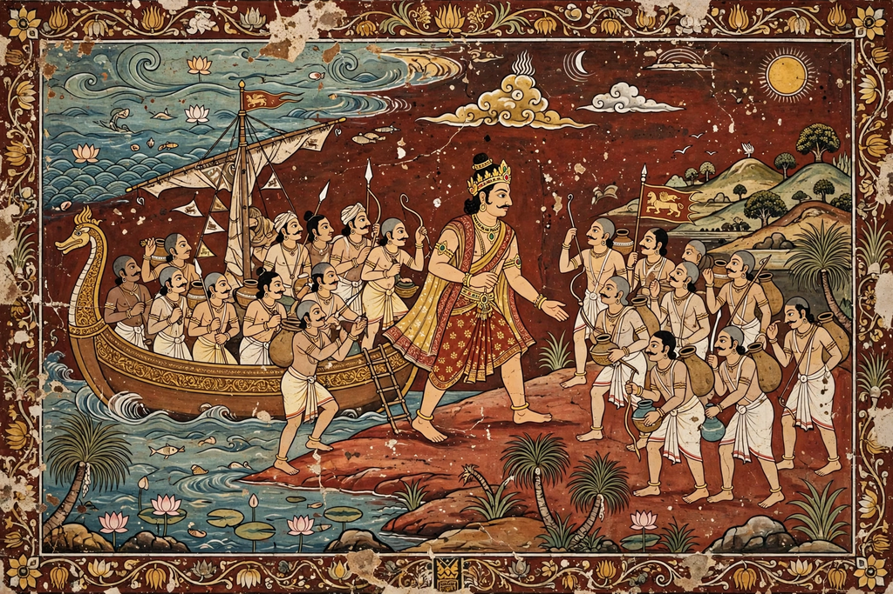

| Prince Vijaya | |
|---|---|
 The landing of Prince Vijaya, as depicted in Sri Lankan art | |
| Reign | Traditionally c. 543 – 505 BCE |
| Predecessor | None (first legendary king of Sri Lanka) |
| Successor | Upatissa (regent); then Panduvasdeva |
| Father | Sinhabahu, king of Sinhapura |
| Consorts | Kuveni; later a Pandyan princess |
Prince Vijaya (flourished 6th–5th century BCE, by tradition) is the legendary first king of Sri Lanka and the mythical ancestor of the Sinhalese people. His story — of exile from India, landing on the island, marriage to the yakshini Kuveni, and founding of a kingdom — is told in the island's Pali chronicles, principally the Mahavamsa (5th–6th century CE) and the earlier Dipavamsa.
According to the chronicles, Vijaya's grandfather was a lion (sinha) who carried off a princess of Vanga (Bengal); their son Sinhabahu — "lion-armed" — founded the city of Sinhapura in the Lala country (usually identified with Gujarat or Bengal) and killed the lion. His son Vijaya grew up so violent and lawless with his 700 companions that the people demanded their punishment. King Sinhabahu had the men's heads half-shaved and set them adrift on a ship; after being turned away elsewhere they landed in Lanka at the port of Tambapanni.
The landing is dated by the chronicles to the very day of the Buddha's death — traditionally 543 BCE — a synchronism that marks Lanka as destined for Buddhism. On shore Vijaya encountered Kuveni, a spirit (yakkha) princess spinning under a tree, who first threatened and then aided the newcomers, betraying her own people to slaughter and becoming Vijaya's consort. With her help he founded the city of Tambapanni and ruled the island. Before his consecration as king, however, he set Kuveni aside to marry a princess from Madurai of the Pandyan kingdom; the abandoned Kuveni, the chronicles say, was killed by her own people, and her children fled to the hills — in legend, ancestors of the island's Vedda people.
Vijaya reigned, by tradition, 38 years. Dying without sons by his Pandyan queen, he sent for his brother Sumitta's line; the succession passed after a year's interregnum under the minister Upatissa to his nephew Panduvasdeva, from whom the early kings of Anuradhapura traced descent. Vijaya's landing thus opens the king-lists that the Mahavamsa continues for over two thousand years.
Modern scholars regard Vijaya as a legendary rather than historical figure — the chronicles were composed a millennium after his supposed reign — embodying real processes: migration from India, the establishment of Indo-Aryan language and culture on the island, and relations between settlers and indigenous peoples. Archaeology at Anuradhapura shows continuous settlement and early links with India, but no direct evidence of a single founding expedition. The Vijaya myth has nevertheless been enormously influential in Sinhalese national identity, and Vijaya is celebrated in Sri Lankan historiography, art and place-names such as Vijaya Kumaratunga's namesake — and the flag's lion derives from his lion ancestor.